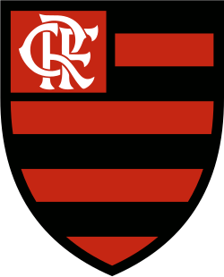

Flamengo
Clube de Regatas do Flamengo - O Mais Querido
História do Flamengo
O Clube de Regatas do Flamengo foi fundado em 17 de novembro de 1895, inicialmente para a prática de remo. A seção de futebol foi criada em 1912, após uma divisão no Fluminense, tornando o Flamengo um clube poliesportivo com grande destaque no futebol.
Frases relacionadas ao time
- Rubro-Negro
- O Mais Querido
- Urubu
Torcidas Organizadas
- Torcida Jovem do Flamengo
- Raça Rubro-Negra
- Urubuzada
Próximos Jogos
| Escudo do Clube | Nome do Clube | Tipo de Campeonato | Próximo Jogo | Horário | Link do Site |
|---|---|---|---|---|---|
 |
Sport Club Internacional | Brasileirão Série A | 21:30 | Site do Internacional | |
|
Sport Club Internacional | Libertadores | 21:00 | Site do Internacional | |
| Esporte Clube Vitória | Brasileirão Série A | 21:00 | Site do Vitória | ||
| Grêmio Foot-Ball Porto Alegrense | Brasileirão Série A | 16:00 | Site do Grêmio |